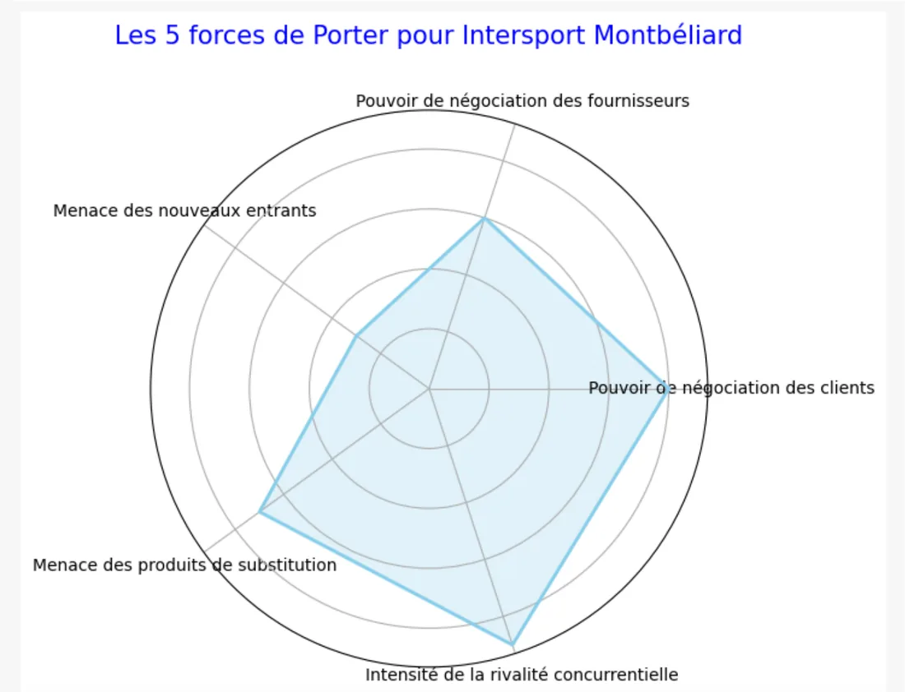
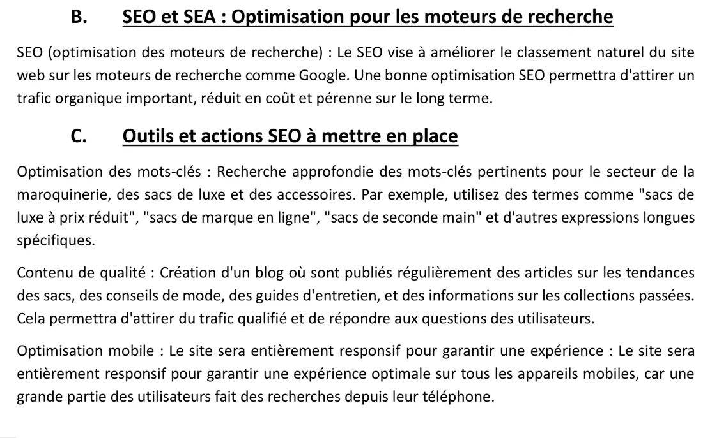

Marketing et international · BC3 · BUT 2
Niveau 2 : Collaborer à la démarche marketing
Niveau attendu en deuxième année : intermédiaire. 4 apprentissages critiques, chacun avec ce qu’il recouvre, la situation où je l’ai travaillé et mes traces.
Apprentissages critiques du niveau 2
- AC23.01
Participer à l’audit et à la formulation stratégique pour aboutir à une proposition de segmentation, ciblage et positionnement, en prenant en compte les forces et faiblesses de l’organisation avec une démarche durable en utilisant des logiciels d’analyse statistique
Réaliser un diagnostic interne et externe, puis proposer segmentation, cible et positionnement, en appuyant l’analyse sur des données traitées avec un logiciel statistique et dans une logique durable.
Chez Intersport Montbéliard, après un entretien avec le directeur du magasin, nous avons dressé en trinôme le SWOT, le PESTEL et les cinq forces de Porter, notées sur 10 : la rivalité concurrentielle, à 9, et le pouvoir des clients, à 8, dominent face à Décathlon. Nous en avons tiré six facteurs clés de succès, dont l’expérience phygitale et l’offre écoresponsable des vélos Nakamura fabriqués en France, puis des préconisations. Au DCF, le diagnostic de Ray-Ban Meta a débouché sur une segmentation selon quatre critères, sociodémographique, psychographique, comportemental et géographique, sur trois cibles, les technophiles de 18 à 35 ans, les créateurs de contenu et les jeunes professionnels, chacune avec son persona, et sur un positionnement : des lunettes connectées qui allient style, technologie et discrétion. Au National GACO Game, deux questionnaires en ligne ont fondé le choix de nos deux cibles.
Avec le recul, la synthèse du jury DCF, commune à tous les groupes, insistait sur le lien entre l’étude de marché et le choix des cibles ; je rendrais ce passage plus explicite.
TracesDiagnostic stratégique d’Intersport Montbéliard (trinôme)PDFDossier DCF, segmentation et positionnement (binôme)Dossier National GACO Game, enquêtes (groupe)PDF

Les cinq forces de Porter notées pour Intersport Montbéliard. - AC23.02
Élaborer le mix produit – prix – distribution – communication
Construire une offre cohérente : définir le produit, fixer le prix, choisir les canaux de distribution et les actions de communication en accord avec le positionnement retenu.
Au DCF, nous avons construit une offre par cible pour Ray-Ban Meta : Tech Vision à 399 € pour les technophiles, Creator Pro à 429 € pour les créateurs de contenu, Executive à 449 € pour les jeunes professionnels. Chacune réunit un produit, un pack de services, un lancement lors d’un événement à Paris, des canaux de vente et une campagne propre, défendus par un argumentaire SONCAS. Pour NORMAL CTM Corporation, le mix tenait en quatre choix : des formations courtes et du coaching, des modules de 10 à 20 € avec des tarifs solidaires, une plateforme utilisable sur tous les supports, une communication fondée sur les témoignages. Au National GACO Game, nos offres pour les clubs sportifs allaient d’un camp multisports de 400 à 600 € par participant à un partenariat de trois ans facturé selon la notoriété du club.
Avec le recul, notre dossier présente ces prix comme compétitifs alors que les modèles existants se vendent de 329 à 359 € ; la synthèse du jury mettait justement en garde contre des offres trop chères pour la cible.
TracesDossier DCF, les trois offres (binôme)Dossier final Les Entrep’, mix marketing (groupe)PDFDossier National GACO Game, offres (groupe)PDF

Mix marketing de NORMAL CTM Corporation : produit, prix, distribution et promotion. - AC23.03
Concevoir les outils de communication du marketing mix, dans le respect de la législation, en utilisant les outils numériques et la communication écrite
Réaliser des supports, affiche, publication, e-mailing ou plaquette, avec les outils numériques et dans le respect des règles légales de la communication.
Pour la SAÉ e-commerce, j’ai travaillé pour un client fictif, « Votre Sac & Vous », un maroquinier de Pontarlier qui veut passer au tout en ligne d’ici 2026. J’ai monté son site sous WordPress, avec le thème OceanWP et Elementor, sur le serveur de l’université ; le cahier des charges imposait des photos libres de droits, l’optimisation de trois pages pour le référencement, une FAQ et un formulaire de contact. Mon étude stratégique, rédigée seul, en tire le plan : mots-clés de longue traîne comme « sacs de luxe à prix réduit », annonces Google Ads et reciblage des visiteurs, choix des réseaux sociaux. En marketing digital, nos cartes de Trivial Pursuit rappelaient les obligations du RGPD : informer, obtenir le consentement, sécuriser les données, garantir les droits.
TracesÉtude stratégique e-commerce, mars 2025 (individuel)PDFSauvegarde du site WordPress, 13 mars 2025Cartes Trivial Pursuit du marketing digital (groupe)

Étude stratégique e-commerce : les actions de référencement prévues pour « Votre Sac & Vous ». - AC23.04
Mesurer l’impact des opérations de communication à l’aide des indicateurs de performance
Suivre les résultats d’une action (portée, engagement, taux de conversion, retombées commerciales) et juger si elle a rempli son objectif.
Au DCF, nous avons relié chaque objectif de la campagne Ray-Ban Meta à un indicateur et à une échéance : 50 % d’engagement en plus sur les réseaux sociaux en trois mois pour la notoriété, 20 000 inscriptions à la newsletter en deux mois pour les contacts, 30 % d’abonnements premium en six mois pour la fidélisation, et la hausse des contenus créés par les utilisateurs pour la recommandation. Dans mon étude e-commerce, j’ai fixé des objectifs SMART du même ordre : 85 % de satisfaction dans les avis en ligne en trois mois et 15 % de ventes en plus sur les produits en promotion en six mois.
Avec le recul, ces indicateurs sont restés des objectifs, puisqu’aucune campagne n’a été lancée. Et notre tableau annonce 200 000 ventes en quatre mois là où le texte qui le suit en vise 4 000 le premier mois : un indicateur doit être cohérent partout où il apparaît.
TracesDossier DCF, indicateurs (binôme)Étude stratégique e-commerce, objectifs SMART (individuel)PDF

Indicateurs de performance de la campagne Ray-Ban Meta : objectif, indicateur et horizon.


Bilan du niveau 2
Points forts : aller du diagnostic à l’offre : SWOT, PESTEL et Porter, puis segmentation, cibles, positionnement et une offre complète par cible, nourris par de vraies enquêtes.
À renforcer : des indicateurs restés théoriques, et un lien à rendre explicite entre l’étude de marché et le choix des cibles.
Pour la suite : au niveau 3, piloter la démarche marketing à l’international et mesurer pour de bon l’effet d’une action.